Fairness
Where bias enters, how to measure it, what fixing it costs
Albert No · Yonsei University
Trustworthy AI · 2026
Contents
Where Bias Enters
Data, labels and feedback
Who Gets the Opportunity?
Point: a score turns into who gets a loan, and each error hurts someone different.
Illustrative lending example, not a measured case.
Predicting Cost Missed Medical Need
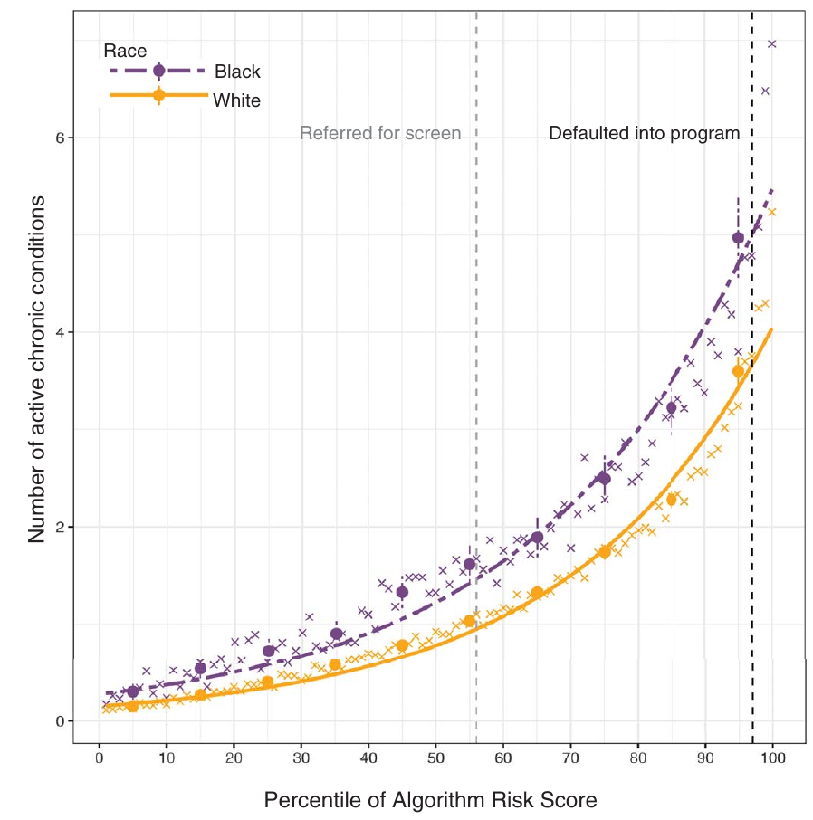
Target: future health-care cost, a proxy
Decision: extra care for top scores
x risk-score percentile · y mean active chronic illnesses
purple dashed = Black · orange solid = White
Same score, more illness for Black patients.
Past Records Can Shape Decisions
Point: a learned pattern is not automatically the right target.
"Can", not "must": whether a model repeats, shrinks or amplifies a gap is measured.
Three Places Bias Enters
Point: bias can enter at sampling, at the target, and through feedback.
Benchmark Composition Can Hide Gaps
Point: a balanced test set can expose groups a skewed one overlooks.
Bar = share of lighter-skinned faces in each benchmark.
Composition alone does not show what causes an error gap.
A Proxy Can Answer the Wrong Question
Point: choosing the target is a fairness decision.
Illustrative. A past-approval label does not by itself show prejudice in a real dataset.
Missing Outcomes Can Reinforce Exclusion
Point: decisions can create the data later used to judge them.
Missing evidence is not evidence of risk.
Dropping a Column Can Leave Information
Point: deleting the group column need not delete group information.
Illustrative table. Deletion alone does not guarantee fairness.
Measuring Fairness
Rates, denominators and scores
One Decision, Two Recorded Outcomes
Lending example: selected = loan approved, $\hat Y = 1$.
$A$ = group (A or B) · $Y$ = recorded outcome: repaid or not.
repaid · did not repay · selected
Synthetic, fully labeled: real denied applicants have no repayment record.
Selection Counts Everyone
Selection rate = selected ÷ everyone in the group.
denominator · selected = numerator
Point: here the denominator is the whole group.
True Positives Count Repayers
True-positive rate (TPR) = selected ÷ repaid.
denominator: only those who repaid · selected
Point: non-repayers sit outside this count.
False Positives Count Non-Repayers
False-positive rate (FPR) = selected ÷ did not repay.
denominator: only those who did not repay · selected
Here selection favors the applicant: what an error costs differs by application.
Precision Counts the Selected
Positive predictive value (PPV) = repaid ÷ selected.
denominator: the selected · repaid = numerator
Point: the selected, not all repayers, are the denominator.
Equal Selection Can Hide Unequal Outcomes
Demographic parity: equal selection rates across groups.
denominator: everyone · selected · repaid
Parity holds here, yet it does not ensure the selected repay.
Equal Opportunity Leaves One Error Unchecked
Equal opportunity: equal TPR across groups.
denominator: repaid · selected
Equal TPR alone does not constrain FPR: 1/4 vs 3/8.
Equalized Odds Checks Both Classes
Equalized odds: equal TPR and equal FPR.
New illustrative population: 10 repaid, 10 did not repay, per group.
Each shaded row is its own denominator · matches rates, not raw error counts.
Equalized Odds Needs a Shared Attainable Point
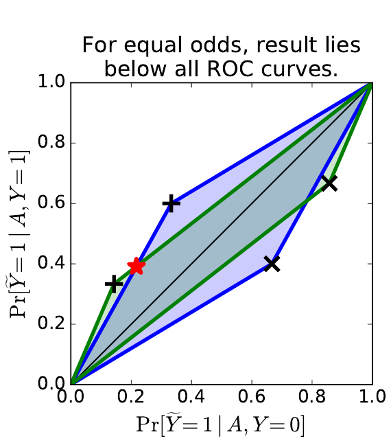
x = false-positive rate (FPR)
y = true-positive rate (TPR)
group 0 attainable
group 1 attainable
overlap: both can reach
★ one shared point, in the overlap
Equal Opportunity Only Matches Height
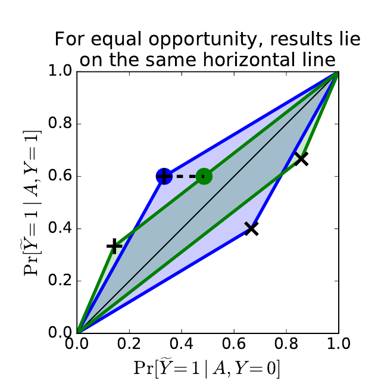
x = FPR · y = TPR
● group 0's point
● group 1's point
Same height: equal TPR
Different width: FPR left free
A Calibrated Score Has a Meaning
Calibration within groups: score $s$ means a share $s$ repaid, in every group.
everyone scored 0.7 · repaid · did not repay
Not mere agreement between groups: 0.7 must mean 7 in 10.
Calibrated Buckets Can Have Different Mixes
Every score bucket is calibrated, in both groups.
Different mixes: A has more 0.9s, B more 0.6s.
Calibration Does Not Fix Cutoff Precision
Cutoff above 0.5: both groups select 30 of 40.
Point: calibrated, yet PPV 0.8 vs 0.7. PPV averages the selected score mix.
Which Population Does the Rule Compare?
Point: each rule fixes its own denominator.
Group A of the lending example · denominator · selected
Score Meaning Is Not Selection Precision
Calibration: people with the same score.
Predictive parity: people selected above a cutoff.
The Same Scores Yield Different Decisions
FICO credit scores, four groups: a loan goes to scores above the group's threshold.
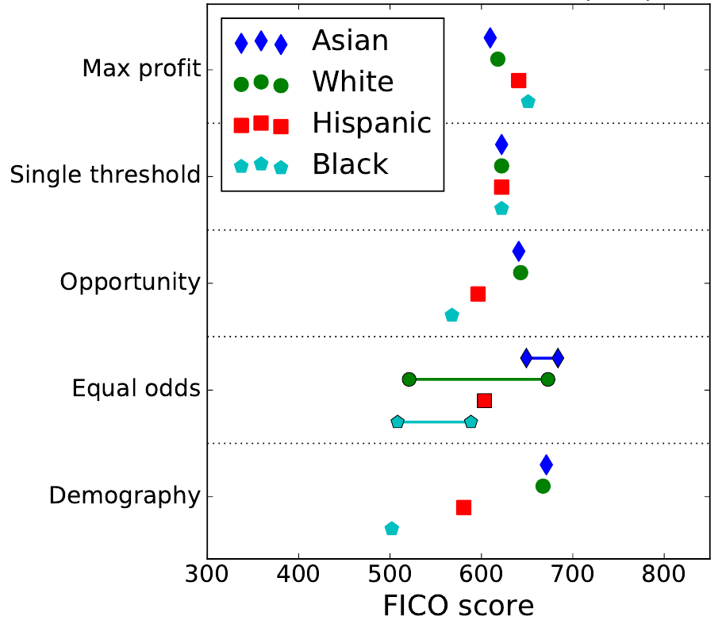
x = FICO score (raw)
Rows = rule: max profit, one shared threshold, equal opportunity, equalized odds, demographic parity
Marker = one group's threshold
Bar = randomized range
Shows decisions moving, not which rule is best.
COMPAS and Impossibility
Different criteria, one dataset
What the COMPAS Audit Measured
COMPAS: a commercial recidivism risk score used in US courts.
ProPublica's 2016 audit: Broward County, FL; scores from 2013–14.
Audit flag = medium + high: broader than the vendor's "high" (8–10).
False-Positive Rates Differed by Group
False-positive rate (FPR): among those not rearrested, share flagged high risk.
Gray bar = all not rearrested in the group · blue = flagged (score > 4).
A rate out of the not rearrested, not out of all defendants.
The Gap Appeared Across Prior-Count Bins

Misdemeanor defendants, split by number of priors.
- x: prior-count bin
- y: FPR, flagged above 4
- Whiskers: 95% intervals
Black FPR higher in every bin.
Wide intervals at high counts. A descriptive split, not a causal adjustment.
Similar Decile Outcomes Are Not Probability Calibration
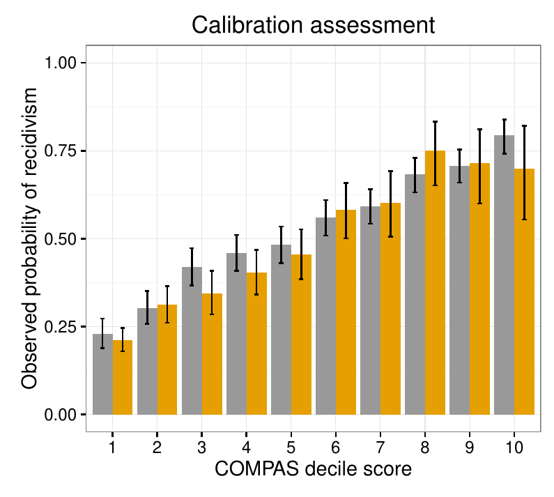
Same decile: compare shares rearrested by race.
- x: COMPAS decile, a rank 1–10
- y: share rearrested within two years
- Black · White
Per decile, shares are close by race.
Decile 7 is not a 70% risk: deciles are ranks, not probabilities.
Cutoff Precision Was Approximately Similar
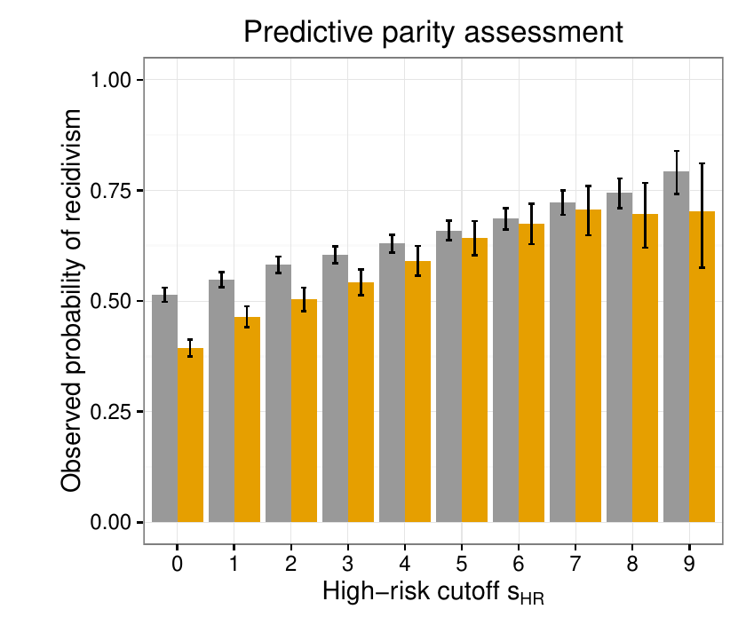
PPV (positive predictive value): share rearrested among the flagged.
- x: cutoff; flagged = decile above it
- y: PPV at that cutoff
- Black · White
Cutoffs 4 and above: PPV close by race.
Approximately similar, not equal. One bar per cutoff, not per decile.
Both Analyses Used Different Denominators
One table, read two ways: column for FPR, row for PPV.
An FPR gap and approximately similar PPV can coexist.
Neither shows that the whole system is fair.
Rearrest Is Not Offending
Every COMPAS rate here uses $Y$ = recorded rearrest within two years.
A possible recording disparity, not a measured one.
Base Rates Count Recorded Positives
Base rate: share of a group with a recorded positive ($Y = 1$).
● recorded positive · ○ recorded negative · shaded = whole group
Point: different base rates change how error rates relate.
Three Equalities Can Conflict
Different base rates, equal PPV ($0 \lt \mathrm{PPV} \lt 1$), FNR below 1:
FPR and FNR cannot both be equal.
Escapes: equal base rates or PPV = 1. Calibration is not a premise.
Score Balance Has Its Own Conditions
A result about scores, separate from the cutoff-PPV identity.
Not every pair of criteria conflicts: specific combinations do.
Both Groups Can Be Calibrated
● recorded positive · ○ recorded negative · blue box = flagged
Calibrated: positive share equals the score in every bucket.
Flagged = the 0.8 bucket, so PPV = 0.8 in both groups.
Equal Precision Can Leave Unequal Errors
Same people as the buckets · gray bar = denominator · blue = numerator
Equal PPV, unequal FPR and FNR: possible, not inevitable.
The Score Mix Explains This Example
Scores fixed at 0.2 or 0.8: calibration then fixes each mix.
- Mean score = base rate: A 0.5, B 0.25
- Fewer high scores in B, so fewer flagged
- So in B: lower FPR, higher FNR
Specific to this construction, not every calibrated model.
Choose the Harm Before the Rate
Two hypothetical decisions: the main harm picks the error rate.
Equal rates need not be low rates.
Also weigh error levels, utility and affected people's priorities.
Mitigation
Before, during and after training
Three Places to Intervene
Each method acts at one stage and targets one criterion.
Pick the stage you can actually touch.
Reweighing
Weight each example so group and label look independent.
Weight of a (group, label) cell = expected share ÷ observed share.
- Expected: the share if group and label were independent
- Below the independence-expected share: up; above it: down
- No example deleted; the labels stay as they are
- An empty cell cannot be repaired by weighting
Example: expected 30%, observed 20%: weight 1.5.
Reweighing: A Worked Example
| Cell | Weight |
|---|---|
| s, + | 1.5 |
| s, − | 0.67 |
| o, + | 0.75 |
| o, − | 2.0 |
100 examples, 60% positive overall. After weighting, each group has 60% positive.
Reweighing, Measured
Parity metrics of the training data, before and after reweighing.

- SPD: favorable rate, unprivileged minus privileged; ideal 0
- DI: favorable rate, unprivileged ÷ privileged; ideal 1
Blue = before, orange = after: both move toward the ideal.
The Reductions Approach
Turn a fairness constraint into ordinary training calls.
- Price the fairness gap as a penalty
- Each round: one cost-weighted fit
- Output: a random mix of the fits
Reductions, Measured
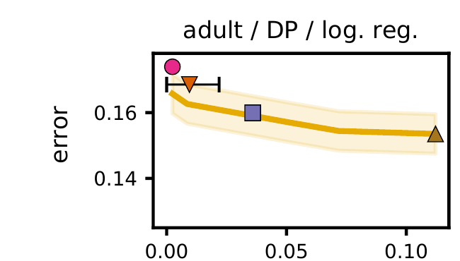
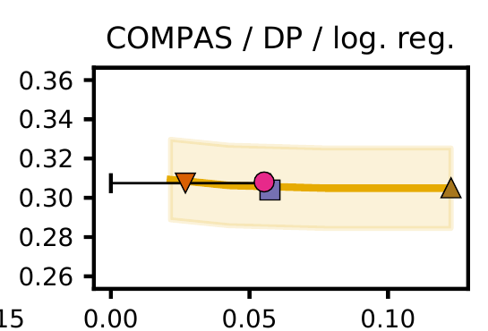
- x: demographic-parity violation; y: test error; lower left is better
- Gold: empirical tradeoff curve, 95% band; not the optimal frontier
Group-Specific Thresholds
Keep the scores; change only the decision rule.
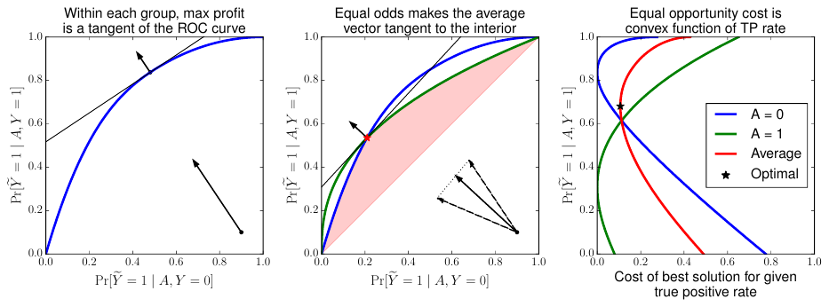
Freeze the score; pick per-group ROC points. Equal odds may randomize.
Needs the group at decision time and labeled held-out data.
The Cost, on FICO Data
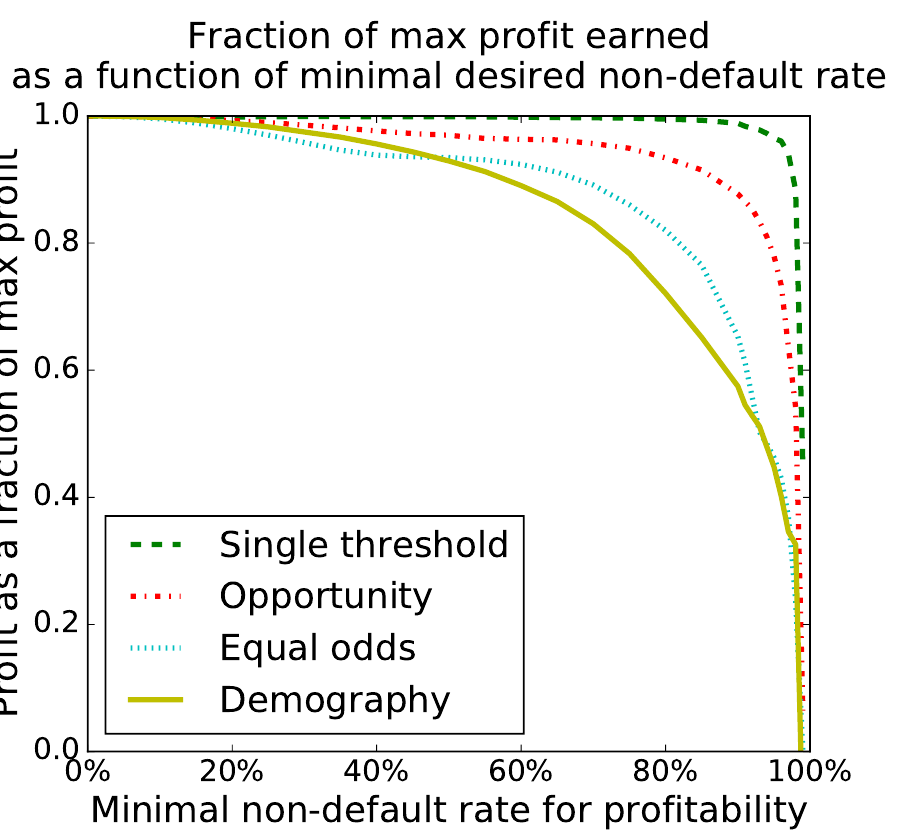
Lender profit when thresholds must meet a criterion.
- y: share of the maximum profit
- x: break-even repayment rate
- At 82%, a loan pays only if over 82% of such borrowers repay
At 82%: single threshold 99.3% · opportunity 92.8% · equal odds 80.2% · demography 69.8%
An Empirical Tradeoff, Not the Optimal Frontier
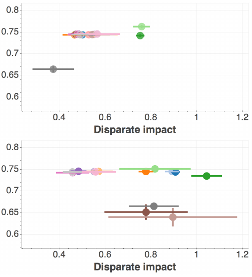
Adult, race. y: balanced accuracy = mean of TPR and TNR. Top: before; bottom: after.
Reweighing
Optimized pre-processing
Disparate impact remover
Learning fair representations
Equal odds post-processing
Calibrated equal odds
Reject option classification
Adversarial debiasing (NN only)
Prejudice remover (LR only)
Dark: logistic regression; light: random forest.
Reject option: DI up, accuracy ≈0.65. Adversarial starts lower: different preprocessing.
Method Cards
| Method | Targets | Evaluated on | Utility | Assumes |
|---|---|---|---|---|
| Reweighing | parity in training data | AIF360: the reweighted data | data metric only | group known in training |
| Reductions | DP or EO constraint | Agarwal: test sets | classification error | group in training; randomized output |
| Group thresholds | equal opportunity or odds | Hardt: FICO data | share of max profit | group at decision; labeled held-out data |
All three take $Y$ as given: a biased label stays biased.
Beyond Classifiers
Audits, benchmarks, generators and law
The Gender Shades Audit
Gender classifiers: error up to 34.7% for darker-skinned women, at most 0.8% for lighter-skinned men.
PPB: 1,270 faces. Darker = Fitzpatrick IV–VI, lighter = I–III. Binary female/male labels, as the vendors used.
After the Audit: Error Fell on the Named Systems
Raji and Buolamwini re-audited the named vendors.
Not named in 2017: Amazon 31.4%, Kairos 22.5% in 2018. A change after naming, not proof that naming caused it.
Auditing Language Models: BBQ
Ask a question the context cannot answer.
- Nine social dimensions, US English; 58k+ items
- Ambiguous: correct answer is "unknown"
- Bias: do answers lean toward the listed stereotype?
A wrong answer is not always a stereotyped one; the score counts which way answers lean.

BBQ: Bias Shows Most When Context Is Ambiguous

Score: 0 no lean · + toward the stereotype · − against it (max ±100).
Ambiguous scores are scaled by error rate, so panels differ. Benchmark scores, not harm rates.
Generators Can Exaggerate Stereotypes
Stable Diffusion, prompt: "A photo of the face of [OCCUPATION]".

- 100 images per occupation
- Each image: nearest CLIP match among face archetypes (male/female; White/Black/Asian)
- Software developer: 99% White vs 56% in US labor data
- Housekeeper, nurse, flight attendant: 100% female
Governance: Obligations and Their Limits
| Law | Obligation | Limit |
|---|---|---|
| NYC Local Law 144 | Hiring tools: bias audit; publish impact ratios | No LL144 duty to change the tool; city review: 1 issue in 32 firms |
| EU AI Act | High-risk: examine, mitigate data bias (Art. 10) | Annex III high-risk: from 2 Dec 2027 |
| Colorado SB26-189 | From 2027: notice; review after adverse decisions | No new private right of action |
| Korea AI Basic Act | High-impact AI: risk management, oversight (Art. 34) | Impact assessment: “endeavor” only; no bias audit |
Prescribed audit metrics do not settle every fairness question.
Synthesis
Name the criterion
A Checklist
- 1 · Which decision, and which error hurts most?
- 2 · What does $Y$ actually record?
- 3 · Which rate, out of whom?
- 4 · Base rates differ? Then which criteria conflict?
- 5 · Which stage can you change?
- 6 · Evaluated on what data, against what utility?
Key Takeaways
- Bias enters via data, labels and feedback loops
- Each criterion compares a rate with its own denominator
- COMPAS: the analyses evaluated different criteria
- Unequal base rates: some criteria cannot all hold
- Each mitigation targets one criterion, under assumptions
Choosing a fairness criterion is a value judgment.